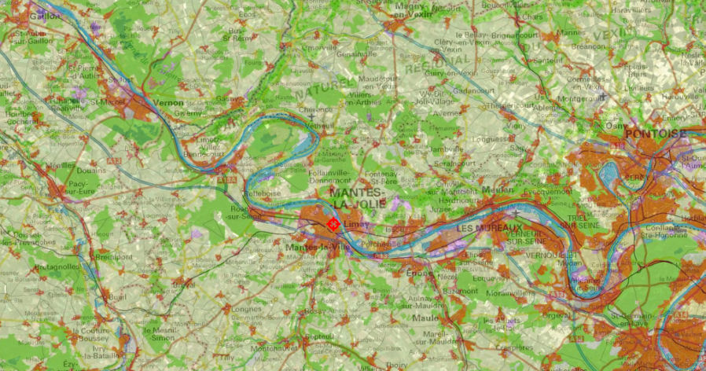
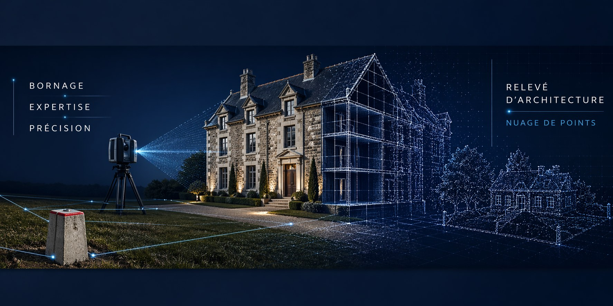

Bienvenue
Le Cabinet ABELLO est installé à Mantes-la-Jolie et à Limay, dans les Yvelines. Nous exerçons notre activité foncière et topographique principalement dans le Mantois Seine Aval, les Yvelines, l'Eure et le Val-d'Oise.
Le cabinet est une S.E.L.A.R.L. de géomètres-experts, inscrite au tableau de l'Ordre des Géomètres-Experts. Il est dirigé par Olivier ABELLO, Géomètre-Expert, membre de l'Ordre sous le numéro 5456.
Notre métier tient en une phrase : dire où passe la limite, et le dire de façon incontestable. Autour de cette mission première viennent s'ajouter la topographie, la copropriété, la division de propriété et l'accompagnement des projets d'urbanisme.
La mémoire foncière de la vallée de la Seine
Le cabinet s'inscrit dans une continuité longue : les archives conservées à Mantes-la-Jolie remontent à 1922, et les dossiers de nos prédécesseurs sont toujours consultés aujourd'hui pour retrouver une borne, un alignement ou une limite ancienne. C'est un avantage concret pour nos clients : sur un très grand nombre de communes du secteur, nous avons déjà le plan.
Notre zone d'activité
Elle n'est pas la même selon la mission. Le foncier appelle du terrain, des voisins convoqués et des archives locales : il est de proximité. Un relevé d'architecture ou un dossier de copropriété se déplace bien plus loin.
- Foncier, division et urbanisme — les Yvelines, autour de Mantes-la-JolieBornage et mitoyenneté, document d'arpentage, servitudes, division de propriété, division en vue de construire, permis d'aménager, autorisations d'urbanisme. Mantes-la-Jolie, Limay, l'ensemble du Mantois et de la vallée de la Seine, jusqu'aux plateaux du Vexin et du Drouais — et les communes limitrophes de l'Eure et du Val-d'Oise.
- Géomatique, relevés d'architecture et copropriété — jusqu'à ParisTopographie, relevés d'intérieurs, de façades et de coupes, scanner 3D, états descriptifs de division et tantièmes. Ces missions ne dépendent pas du secteur : nous intervenons dans un périmètre beaucoup plus large, jusqu'à Paris.


Ce que nous faisons
Quatre familles de missions, détaillées dans les pages du menu.
- FoncierBornage et mitoyenneté, document d'arpentage, servitudes, division de propriété, copropriété, division en volumes.
- GéomatiqueTopographie et nivellement, relevés d'intérieurs et de façades, implantation, cubatures, auscultation d'ouvrages.
- UrbanismeDivision en vue de construire, permis d'aménager, autorisations et certificats d'urbanisme.
- Archives et recherche foncièreExploitation d'un fonds d'archives constitué depuis 1922 par nos prédécesseurs et par le cabinet.
Les questions qu'on nous pose
Dans quel bureau dois-je me rendre ?
Les deux bureaux travaillent sur les mêmes dossiers. Le bureau principal est à Mantes-la-Jolie, place Saint-Maclou ; le bureau secondaire est à Limay, rue de l'Église. Prenez rendez-vous par téléphone ou par courriel, nous vous indiquerons le plus pratique pour vous.
Intervenez-vous en dehors des Yvelines ?
Oui. Pour le foncier, principalement dans l'Eure et le Val-d'Oise, sur les communes proches de la vallée de la Seine.
Pour les relevés d'architecture — intérieurs, façades, coupes, scanner 3D — et pour la copropriété, notre secteur est beaucoup plus large : nous intervenons jusqu'à Paris. Ces missions ne dépendent ni des archives locales ni de la convocation des voisins.
Travaillez-vous pour les particuliers comme pour les collectivités ?
Oui. Nos clients sont des particuliers, des notaires, des agences immobilières, des syndics, des aménageurs, des entreprises de travaux publics et des collectivités locales.
Comment obtenir un devis ?
Par le formulaire de la page « Devis et contact », par courriel ou par téléphone. Indiquez l'adresse, les références cadastrales si vous les avez, et la nature de votre besoin. Soyez le plus précis possible — et si un élément nous manque, nous vous rappellerons.